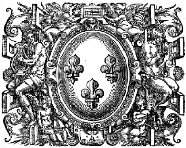

Ensemble Guillaume BONI

Ensemble vocal, Nantes (France)
L'Ensemble vocal Guillaume BONI a été créé à Nantes en 2010 par Etienne ROULLET. Il réunit une petite formation de 8 choristes amateurs ou professionnels, autour d'un répertoire essentiellement Renaissance & Baroque.
Prochains concerts : Décembre 2013, à Nantes
Concerts récents et à venir
Concerts passés
Dimanche 9 juin 2013
Eglise St-Aignan de Grandlieu
Œuvres de Monteverdi, Boni, Allegri.
Enregistrements du concert à écouter
dans la section medias.
Samedi 31 mars 2012,
Eglise St Léger, Orvault
Œuvres de Monteverdi, Boni, Allegri
Vidéos du concert à visionner dans la section medias.
Mardi 12 mars 2013
Chapelle St Marc, Nantes
Œuvres de Monteverdi, Boni, Allegri, Bach.
Orgue : Frédéric Labarre.
Médias
Vidéos
Autre répertoire
- Claudio Monteverdi - Magnificat II in genere da cappella
- J. S. Bach - Motet "Lobet Den Herrn, Alle Heiden" BWV 230
- Antonio Lotti - Crucifixus à 8 voix
- Francis Poulenc - Quatre motets pour le temps de Noël
Contact
Contactez-nous : etienne.roullet@aliceadsl.fr